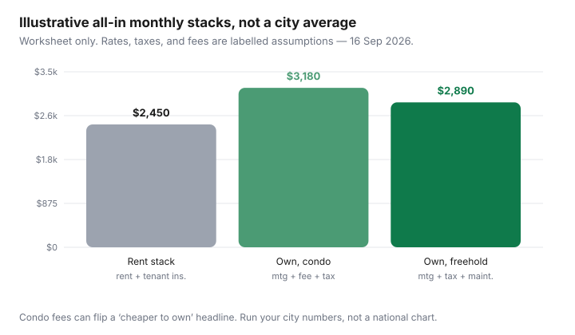

Housing · Canada
How to run a rent-vs-buy decision for your Canadian city (without one-size math)
Viral “buy now” charts treat Canada as one housing market, skip condo fees, forget land transfer tax, and assume you will stay 25 years in the same detached house. Households do not live in that spreadsheet.
This is a city-aware all-in stack: what you actually pay to own versus rent for the years you will really stay — not a U.S. 5% rule of thumb, and not a recommendation to buy or to keep renting. Mortgage shopping is renewal and straight-switch education when you already own; first-time cash-to-close belongs with the FHSA playbook. This page is the decision frame that sits above both.
Disclosure: Mortgage-rate comparison tools and home-insurance quote comparison are offer types. Saving Optimizer may earn a commission if we later add partner links. We do not currently claim lender or insurer partnerships. Figures below are public Statistics Canada and program numbers plus labelled worksheets — not search volumes, not a brokerage quote.
Key takeaways
- National rent headlines are a mood, not your bill. Statistics Canada’s CPI rent index rose 2.8% year over year in August 2026; shelter overall 1.5% (Daily, 14 Sep 2026). Asking rents and your lease are different series.
- Build two stacks: ownership (mortgage, property tax, condo/strata, insurance, maintenance, closing costs / stay horizon) and renting (rent, tenant insurance, parking, laundry, moving risk).
- Toronto land transfer tax (provincial + municipal, with first-time refunds up to $4,000 and $4,475 respectively — ontario.ca / toronto.ca, reviewed 16 Sep 2026) can dominate year-one math. Vancouver strata documents can dominate year three.
- A five-year stay that looks like a win at 4.5% can lose at 6% or with a $400/month condo-fee jump. Sensitivity is the product.
- Renting still wins when the down payment is the emergency fund, the job is not city-stable, or the ownership stack needs a roommate you do not have.
Why national rent-vs-buy headlines mislead city households
Statistics Canada’s Quarterly Rent Statistics for Q2 2026 (Daily, 9 Sep 2026) put average asking rent for a two-bedroom across CMAs at $2,130, down 3.6% from Q2 2025 — with Vancouver and Calgary among the year-over-year declines and some smaller CMAs still up. That is asking rent on vacant units, experimental, and not the CPI rent index. CPI rent is a quality-adjusted price change for a wider mix of dwellings, including occupied units. Mixing the two is how Twitter threads conclude “rents are crashing so buy” or “rents are soaring so buy” in the same week.
Your decision uses your rent (or the rent you would pay after a move), your target purchase, and your stay horizon. A Montréal walk-up with heat included is not a Toronto condo with a special assessment hanging over the status certificate.
Build the all-in ownership stack: mortgage, tax, condo/strata, insurance, maintenance
Write one monthly line for each. If you cannot fill a line, you are not ready to compare — you are guessing.
| Line | What to put | Where it hides |
|---|---|---|
| Mortgage (P&I) | Contract payment at a rate you can actually get | Stress-test qualification is not the payment |
| Property tax | Current bill ÷ 12, not last year’s rumour | Escrow vs pay-yourself |
| Condo / strata fee | Status certificate / Form B number | What it excludes (hydro, parking, internet) |
| Home insurance | Quote for this address and deductible | Condo unit vs building master policy |
| Maintenance sinking fund | 1% of value / 12 is a cliché; use a roof/boiler age | Freehold: you are the reserve fund |
| Closing costs / stay years | LTT, legal, inspection, move ÷ months you will stay | Toronto municipal LTT; first-time refunds |
For condo versus freehold monthly texture, use the condo vs freehold worksheet. CMHC’s condominium buyer guide still tells purchasers to condition on a satisfactory status/estoppel review — reserve fund, special assessments, what fees cover. That document is a cost input, not a vibe.
Build the rental stack: rent, tenant insurance, parking, laundry, moving risk
Rent is the headline. Parking, in-suite laundry versus $3 machines, heat versus hydro, and tenant insurance are the rest. A $2,400 “heat included” walk-up can beat a $2,200 “hydro extra” condo once winter arrives — that overlap lives with Utilities, not here, but the lease line still belongs on this stack.
Add a moving reserve: one local move every three to five years if you are in an exempt Ontario building or a city where landlords reset to market when you leave. DIY vs movers is the costing page; here you only need a dollar-per-month placeholder so renting is not magically frictionless.

City caveats: Toronto, Vancouver, Montréal, Calgary, Ottawa patterns
- Toronto: Provincial land transfer tax plus municipal LTT. First-time refunds: up to $4,000 provincial (homes up to about $368,000 pay no provincial LTT if you qualify) and up to $4,475 municipal (ontario.ca updated 10 Feb 2026; toronto.ca MLTT rebate page, reviewed 16 Sep 2026). Above those purchase prices the tax still bites. Guideline rent control may not apply if the unit was not occupied for residential purposes on or before 15 Nov 2018 — see exempt vs controlled.
- Vancouver: Strata documents and special levies can dwarf a 25-basis-point rate win. B.C. 2026 rent increase limit is 2.3% for most residential tenancies (gov.bc.ca, reviewed 16 Sep 2026) — renting is not “reset every year” the way an exempt Toronto new-build can be.
- Montréal: TAL lease context, typically no required security deposit, assignment rules changed for notices on/after 21 Feb 2024. Ownership stacks include school tax and, for condos, copropriété fees. Do not paste an Ontario LTT line onto a Québec deed.
- Calgary / Edmonton: Lower purchase prices can make the mortgage line look kind until property tax and a long winter maintenance fund show up. Q2 2026 asking-rent softness is not a 10-year forecast.
- Ottawa: Federal-job stability versus condo-fee growth in the core. Run the five-year table twice: stay in the public service, and leave it.
Opportunity-cost and down-payment runway (FHSA/HBP at high level)
Cash sitting for a down payment has a job: it is also the emergency fund you will miss if the furnace dies in month four of ownership. The FHSA ($8,000 annual / $40,000 lifetime participation room on CRA pages, reviewed 16 Sep 2026) and the Home Buyers’ Plan (up to $60,000 from an RRSP) change the runway. They do not change the monthly stack. FTHBI is closed to new applicants (CMHC: deadline 21 Mar 2024 midnight ET). Use the FHSA article for contribution calendars; here, only ask whether the down payment is extra savings or relocated safety.
Sensitivity table: rate, condo fees, and five-year stay horizon
| Lever | If it moves against you | What to re-run |
|---|---|---|
| Contract rate +0.50 pt | Payment up; stress test may also bind buyers | Monthly stack and cash-to-close buffer |
| Condo fee +$150 | Ownership stack can overtake rent in year one | Status certificate, not the listing’s “includes heat” |
| Stay 3 years not 7 | LTT and selling costs dominate | Closing costs ÷ months; selling commission/legal |
| Rent + guideline only | Renting looks more expensive slowly | Whether the unit is actually guideline-bound |
A simple hurdle: if ownership’s extra monthly cost × 12 × years you will stay is less than renting’s extra cost plus the moving you would have done anyway, ownership is at least in the conversation. If the extra monthly cost is only affordable because you emptied the FHSA and the TFSA emergency fund, renting still has a job.
When renting still wins even if you can qualify
Qualification is a lender’s affordability test, not a household wellness test. Renting still wins when:
- You would buy a condo whose reserve fund story you have not read (CMHC’s caution is the special assessment after closing).
- The job, visa, or relationship has a 24-month fuse.
- The only way to make the payment is a variable-rate teaser you do not understand, or a 30-year amortization you will resent at renewal — see the renewal article before you treat today’s payment as permanent.
- Your rent is guideline-bound, parking is included, and a purchase would add a car you do not own yet.
None of that is a moral argument for renting. It is how you avoid buying a spreadsheet.
Sources & date stamps
- Statistics Canada Daily, CPI August 2026 (14 Sep 2026): all-items +3.0%; shelter +1.5%; rent +2.8% year over year.
- Statistics Canada Daily, Quarterly rent statistics, Q2 2026 (9 Sep 2026): CMA two-bedroom asking rent $2,130, −3.6% year over year (experimental).
- CMHC, home-buying and condominium buyer guides (public pages, reviewed 16 Sep 2026).
- ontario.ca land transfer tax first-time refunds (updated 10 Feb 2026): maximum $4,000; toronto.ca MLTT first-time rebate up to $4,475 (reviewed 16 Sep 2026).
- CRA FHSA and Home Buyers’ Plan pages; CMHC FTHBI closed notice (21 Mar 2024 deadline) — reviewed 16 Sep 2026.
Frequently asked questions
Is there a simple Canada-wide rent-vs-buy percentage rule?
No. Provincial land transfer tax, condo/strata fees, and rent-control status change the math by city. Build two monthly stacks and a stay-horizon for closing costs instead of importing a U.S. rule of thumb.
Which rent number should I use — asking rent or CPI?
Use the rent you would actually pay. Statistics Canada’s Q2 2026 CMA asking-rent average and the CPI rent index answer different questions. Mixing them produces viral charts, not household decisions.
How do first-time land transfer tax refunds change Toronto math?
Ontario’s first-time refund is up to $4,000 (no provincial LTT on the first $368,000 of an eligible home). Toronto’s municipal rebate is up to $4,475. Above those prices you still pay tax. Confirm ontario.ca and toronto.ca — this is not a closing-table calculation.
Should I count FHSA room as a reason to buy this year?
FHSA room is a down-payment runway, not a signal that prices or rates are ‘right.’ Emptying the emergency fund to close is how a small rate move becomes a crisis. See the FHSA guide for contribution timing.
When does renting still win if I can get a mortgage?
Short stay horizon, unread condo documents, unstable work location, or a payment that only works if nothing else in the budget moves. Qualification is not the same as resilience.